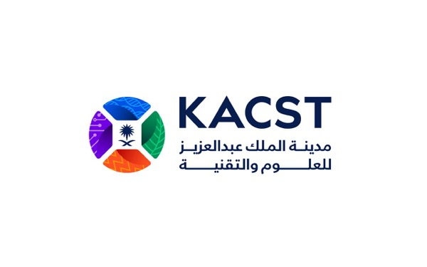
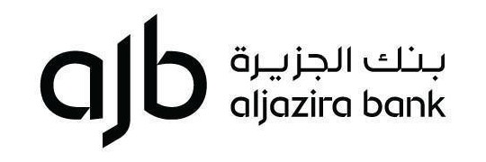
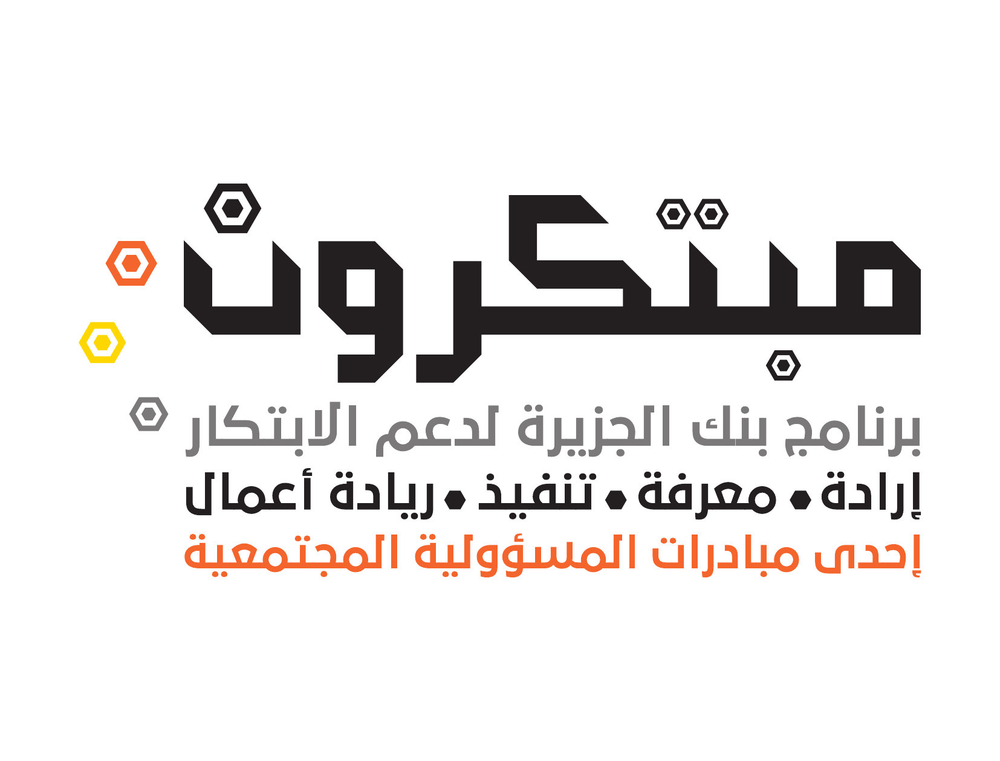

توثيق فوري بتقنية AUREX
وثّق العملية تطبيق-إلى-تطبيق بلمسة واحدة بين جهازَيكما — توثيق متبادل وموثّق في لحظات.
وسيطك الرقمي الآمن لتحويل دفاتر الديون والعربون الورقية إلى سجلات موثّقة غير قابلة للتلاعب، بتوثيق فوري تطبيق-إلى-تطبيق بتقنية AUREX. يُسر يحفظ حقوقك ويحمي المتاجر من الاحتيال عبر حدٍّ ائتماني موحّد، مع خيارات سداد مرنة — وثّق الآن وادفع لاحقاً، أو قسّط.
مجاني للأفراد — ابدأ بتوثيق حقوقك اليوم

أدوات رقمية متكاملة تحوّل كل دين أو عربون إلى سجل موثّق وآمن وغير قابل للتلاعب.
وثّق العملية تطبيق-إلى-تطبيق بلمسة واحدة بين جهازَيكما — توثيق متبادل وموثّق في لحظات.
سجّل ديونك ومستحقاتك بشكل منظّم وآمن، وداعاً للدفاتر الورقية والأخطاء والنزاعات.
وثّق العربون والدفعات المقدّمة بسجل رقمي معتمد من الطرفين يحمي حقوق الجميع.
حدّ موحّد لكل عميل عبر جميع المتاجر يمنع التلاعب والتديّن بأسماء الآخرين والاحتيال المتكرر بين المتاجر.
وثّق العقود والاتفاقيات الرقمية بختم زمني معتمد، مرجع لا يُنازع عند الحاجة.
إشعارات وتذكيرات تلقائية بمواعيد السداد عبر الرسائل والتنبيهات قبل أن تتأخر.
صدّر مستنداتك بصيغة PDF موثّقة بختم زمني، وأرشفة آمنة يمكن الرجوع إليها في أي وقت.
مساعد مدعوم بالذكاء الاصطناعي يجيب على أسئلتك ويحلّل سجلاتك الموثّقة ويذكّرك بأولوياتك.
صوّر الإيصال أو العقد أو فاتورة ورقية قديمة، فيستخرج يُسر المبلغ والتفاصيل ويوثّقها رقمياً دون إدخال يدوي.
تخيّل لمسة Apple Pay أو Google Pay — لكن بدل أن تنتقل الفلوس، ينتقل التوثيق. بلمسة قرب بين جهازَيكما تتحوّل العملية إلى سجلّ موثّق بموافقة الطرفين لا يُزوَّر ولا يُنكَر، والسداد يبقى لاحقاً عبر التطبيق. هذه التقنية الحصرية هي ما يميّز يُسر ويصنع قوّته.
بنفس سهولة الدفع اللاسلكي — قرّب جهازك ليتم التوثيق في لحظات، دون رمز ودون تعقيد.
يُختم الحق لحظة العملية، ويبقى السداد مرناً لاحقاً عبر التطبيق بالطريقة التي تتفقون عليها.
لا تتم العملية إلا بموافقة الطرفين معاً — ولا تعديل ولا حذف ولا إنكار بعدها.
توثيق فوري حتى دون اتصال لحظة العملية، على آيفون وأندرويد، والمزامنة تتم لاحقاً تلقائياً.
وداعاً للدفاتر الورقية والحقوق الضائعة.

توثيق تطبيق-إلى-تطبيق بين جهازَيكما — بلا أوراق ولا أجهزة خاصة.
اليوم يستطيع أي شخص أن يتنقّل بين المتاجر، يتديّن بأسماء غيره أو يسحب عرباين، ويكرّر الاحتيال في كل متجر — والتاجر يكتشف المشكلة بعد فوات الأوان.
مع يُسر تنضم كل المتاجر إلى قاعدة بيانات موحّدة وآمنة، ولكل عميل حدٌّ ائتماني واضح عبر الشبكة كاملة — فلا أحد يتجاوز حدّه أو يتنقّل بين المتاجر مراكماً الديون دون أن يراه الجميع.
شبكة موحّدة تحمي كل المتاجر من الاحتيال
المسح الذكي (OCR) لا يوثّق الجديد فقط — بل يرقمن ماضيك الورقي.
صوّر فواتيرك وديونك الورقية القديمة (الحالية غير المنتهية)، فيستخرج يُسر المبلغ والتفاصيل ويوثّقها رقمياً. وحين يأتي العميل اطلب منه سدادها مرة واحدة أو تحويلها إلى التطبيق لتوثيقها — وهكذا تتحوّل تدريجياً من الدفاتر الورقية إلى دفتر رقمي موثّق.
من المورّد إلى المتجر أو السوق — كل بضاعة وكل اتفاق ربح موثّق ومحفوظ الحق.
من توثيق الديون والعربون إلى العقود والأرشفة — كل ما تحتاجه لحفظ حقوقك في مكان واحد، بواجهة عربية بسيطة وآمنة.
يُسر يوثّق الحق فوراً، ويترك السداد مرناً — السداد لا يكون وقت العملية، بل لاحقاً بالطريقة التي يتفق عليها الطرفان.
يُوثّق الدين أو العربون لحظة العملية، ويُسدّد لاحقاً مباشرةً للتاجر في الموعد المتفق عليه — مع تذكيرات تلقائية بمواعيد السداد.
يختار العميل التقسيط كطريقة دفع عبر شركاء مرخّصين، فيستلم التاجر كامل مستحقاته دفعة واحدة دون أن يفتح العميل حساب دين في المتجر.
اختر ما يناسب متجرك: دفترك الرقمي فقط، أو خدمة التقسيط فقط، أو الجمع بينهما معاً — والقرار بيدك في كل عملية وكل عميل.
خيارات سداد مرنة تناسب كل عملية وكل عميل — وثّق الآن، واتفقوا على طريقة السداد الأنسب لكم.
من الفرد إلى الشركة إلى الجهة الحكومية — لكلٍّ حسابه وصلاحياته الموثّقة.
مجاني بالكامل — وثّق ديونك وعربونك باللمسة، وسدّد لاحقاً عبر التطبيق بخطوات بسيطة.
للتجار والمورّدين والشركات — حساب موثّق بهوية مؤسسية، بصلاحيات وفروع وتقارير وربط API.
للجهات الحكومية والمؤسسات الكبرى — تكامل وتوثيق على مستوى مؤسسي وفق المتطلبات النظامية.
الأفراد مجاناً بالكامل، وباقات للتجار بأسعار هي الأقل في السوق — وتقنية AUREX في كل باقة.
أو 800 ر.س سنوياً
أو 1190 ر.س سنوياً
أو 1490 ر.س سنوياً
أسعار يُسر من الأقل في السوق — مع تضمين تقنية AUREX في كل الباقات، وباقة مجانية كاملة للأفراد، وخيارات سداد مرنة في كل مستوى.
نوفّر تقنية AUREX عبر واجهة برمجية (API) للشركات والبنوك والجهات الحكومية الكبرى — لتشغيل التوثيق الفوري داخل أنظمتها بعلامتها التجارية.
زوّد بنكك أو شركتك أو جهتك الحكومية بواجهة برمجية (API) لتشغيل التوثيق الفوري بتقنية AUREX والدفتر الرقمي داخل تطبيقاتك وأنظمتك ومتاجرك، بعلامتك التجارية.
باقات مرنة (شهرية أو دفعات) تُحدّد حسب حجم التكامل — تواصل معنا
اجمع جميع حسابات شركتك أو مؤسستك لدى البنوك في لوحة واحدة بموافقة العميل، وفق إطار البنك المركزي السعودي (ساما) للمصرفية المفتوحة.
باقات مرنة (شهرية أو دفعات) تُحدّد حسب الاحتياج — تواصل معنا
خدمة المصرفية المفتوحة تتطلب الترخيص/التسجيل لدى البنك المركزي (ساما) أو التكامل عبر مزوّد مرخّص. باقات المؤسسات والحكومات تُحدّد تعاقدياً حسب الحجم والنطاق — تواصل معنا للحصول على عرض سعر مخصّص.
لا أوراق ولا أجهزة خاصة — دقائق معدودة تكفي.
نزّل يُسر مجاناً وأنشئ حسابك في دقائق.
قرّب جهازك من جهاز الطرف الآخر ليُوثّق الدين أو العربون فورياً.
سجل موثّق غير قابل للتلاعب، مع تذكيرات وأرشفة دائمة.
حمّل التطبيق الآن وابدأ بتوثيق ديونك وعربونك بكل يُسر وأمان — مجاني للأفراد بالكامل.
يُسر وسيط توثيق رقمي يوثّق الحق لحظة العملية، ويبقى السداد لاحقاً ومرناً حسب اتفاق الطرفين — إمّا مباشرةً للتاجر في الموعد المتّفق عليه، أو بالتقسيط كطريقة دفع عبر شركاء مرخّصين يستلم معهم التاجر كامل مستحقاته دفعة واحدة، مع تذكيرات تلقائية بمواعيد السداد.
يكفي أن تقرّب جهازك من جهاز الطرف الآخر، فيتم توثيق العملية تطبيق-إلى-تطبيق بشكل متبادل ومعتمد من الطرفين في لحظات — دون أوراق أو أجهزة خاصة.
تنضم المتاجر إلى قاعدة بيانات موحّدة وآمنة، ولكل عميل حدٌّ ائتماني موحّد عبر الشبكة كاملة. هكذا لا يستطيع أحد التديّن بأسماء غيره، ولا التنقّل بين المتاجر متراكماً عليه الديون أو ساحباً عرباين دون أن يظهر ذلك للجميع — ويُنبَّه التاجر فوراً عند بلوغ العميل حدّه قبل منحه ديناً جديداً.
نعم، يُسر مجاني بالكامل للأفراد ويشمل الدفتر الرقمي والتوثيق بتقنية AUREX. أما التجار فلديهم 3 باقات مدفوعة تبدأ من 19 ر.س شهرياً، مع حلول API ومصرفية مفتوحة للمؤسسات والبنوك.
المساعد الذكي (AI) يجيب على أسئلتك ويحلّل سجلاتك الموثّقة ويذكّرك بأولوياتك. أما المسح الضوئي (OCR) فيتيح لك تصوير الإيصال أو العقد ليستخرج يُسر المبلغ والتفاصيل تلقائياً ويوثّقها دون إدخال يدوي.
نعم. باستخدام المسح الذكي (OCR) تصوّر فواتيرك وديونك الورقية القديمة (الحالية غير المنتهية) فيوثّقها يُسر رقمياً. وحين يأتي العميل تطلب منه سدادها مرة واحدة أو تحويلها إلى التطبيق لتوثيقها — وهكذا تتحوّل تدريجياً من الدفاتر الورقية إلى دفتر رقمي موثّق، دعماً للتحول الرقمي.
نعم، كل عملية تُحفظ كسجل رقمي موثّق بختم زمني، ويمكنك تصديرها بصيغة PDF موثّقة وأرشفتها بشكل دائم للرجوع إليها عند الحاجة.
نعتزّ بثقة ودعم شركائنا في رحلة تمكين ريادة الأعمال والتحوّل الرقمي.



للأفراد والتجار والمؤسسات — فريقنا متواجد للرد على استفساراتك ومناقشة الشراكات في أي وقت.